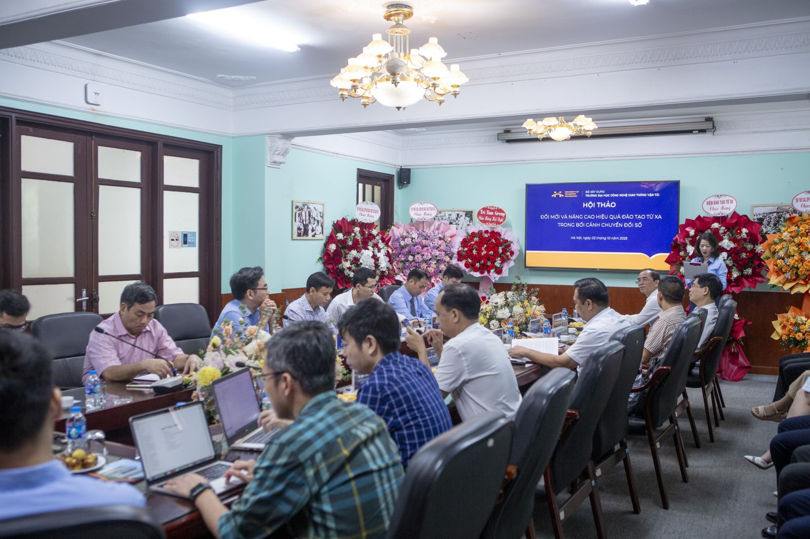
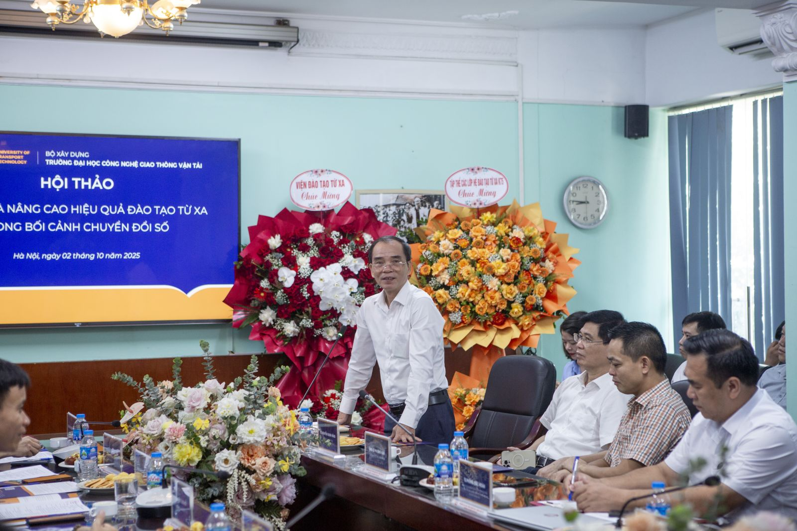
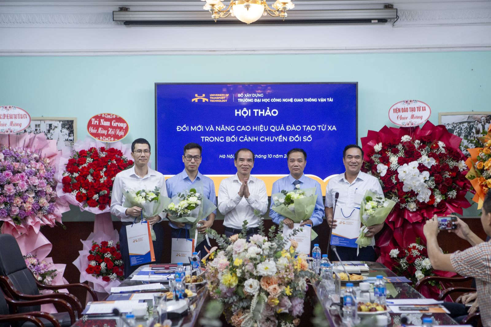
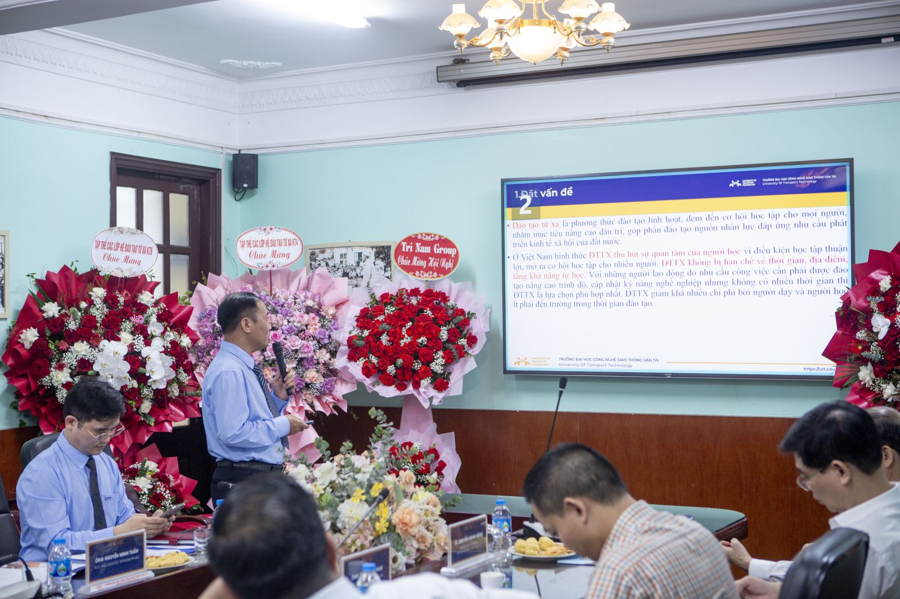
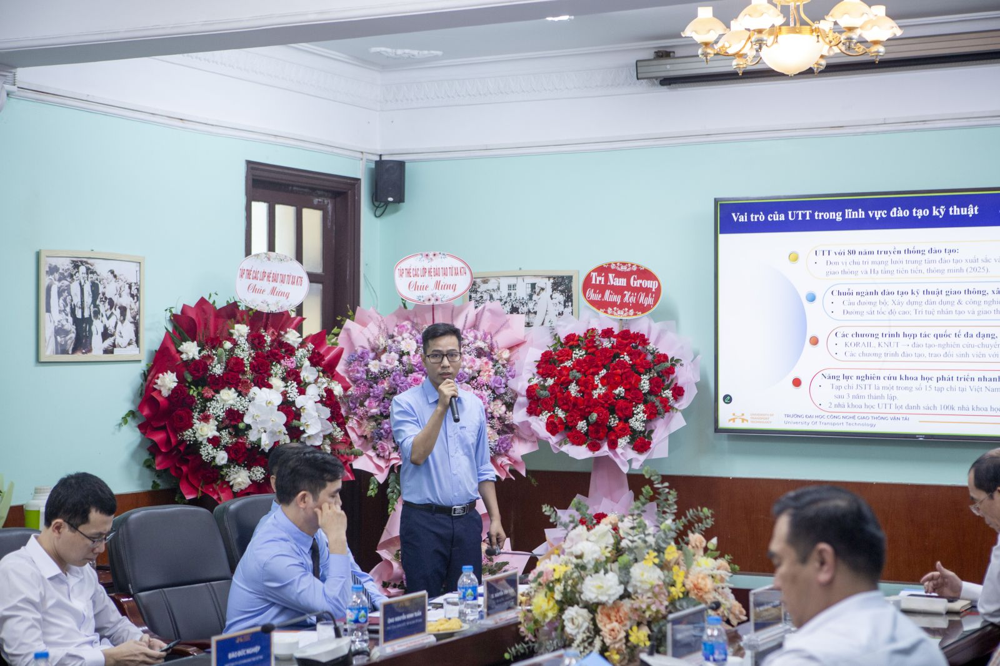
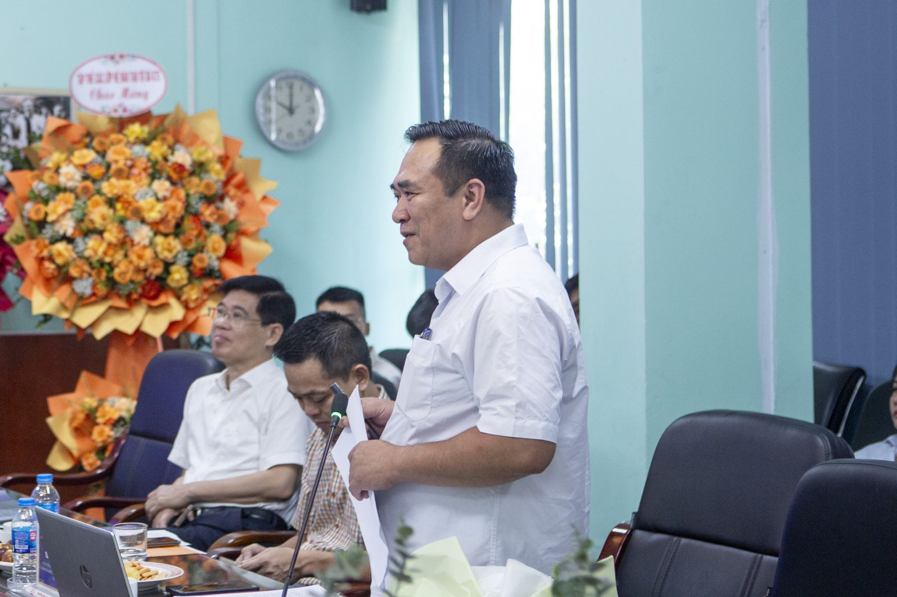
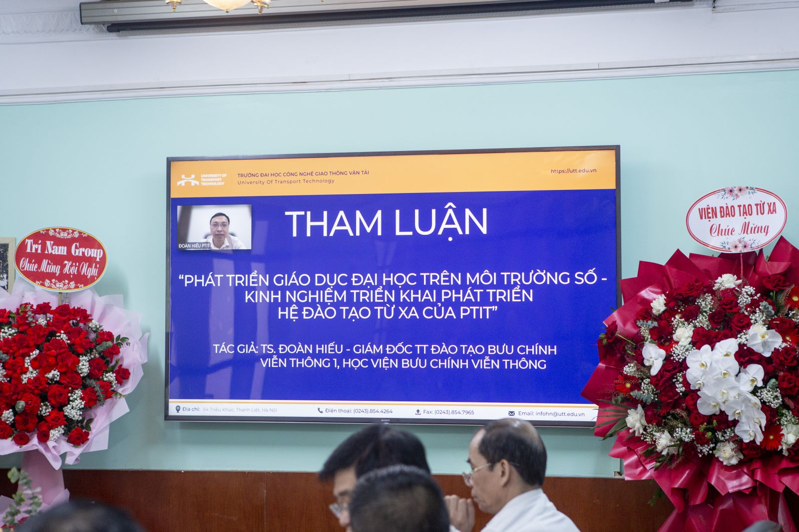
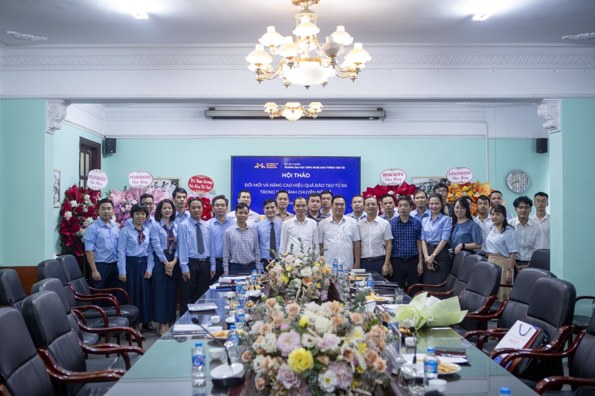

15/12/2025
Sáng ngày 02/10/2025, Trường Đại học Công nghệ GTVT (UTT) đã tổ chức thành công Hội thảo “Đổi mới và nâng cao hiệu quả đào tạo từ xa trong bối cảnh chuyển đổi số”. Sự kiện có sự góp mặt của đại diện lãnh đạo Nhà trường, chuyên gia, nhà khoa học, cùng đại diện các tập đoàn công nghệ và đối tác giáo dục, nhằm thống nhất chiến lược phát triển đào tạo từ xa theo hướng mở, linh hoạt và chất lượng cao.

Phát biểu khai mạc, TS. Nguyễn Văn Lâm - Phó Hiệu trưởng Trường Đại học Công nghệ GTVT nhấn mạnh, đào tạo từ xa đã trở thành xu thế tất yếu của giáo dục đại học trong kỷ nguyên số. Từ tháng 7/2023, Trường Đại học Công nghệ GTVT đã triển khai đào tạo đại học từ xa và đạt được nhiều kết quả tích cực, song cũng còn không ít thách thức cần tiếp tục tháo gỡ.
Hội thảo hôm nay là diễn đàn khoa học để chúng ta cùng nhìn lại thực trạng, chia sẻ kinh nghiệm và đề xuất các giải pháp đổi mới, góp phần phát triển đào tạo từ xa theo hướng hiện đại, bền vững. Đây cũng là nhiệm vụ trọng tâm trong chiến lược phát triển của Nhà trường, nhằm mở rộng cơ hội học tập cho mọi người, gắn kết chặt chẽ với chuyển đổi số, góp phần xây dựng xã hội học tập suốt đời và cung cấp nguồn nhân lực chất lượng cao cho sự phát triển kinh tế - xã hội. Ý nghĩa này càng đặc biệt khi Trường được lựa chọn là một trong 13 cơ sở giáo dục đại học dẫn dắt mạng lưới Trung tâm đào tạo xuất sắc và tài năng trong lĩnh vực Công nghệ giao thông và Hạ tầng tiên tiến, thông minh.


Trong tham luận đề dẫn, TS. Nguyễn Văn Tuấn - Phó Viện trưởng Viện Đào tạo liên tục và từ xa đã khái quát những bước tiến của UTT trong xây dựng chương trình, ứng dụng hệ thống LMS và phát triển học liệu số. Báo cáo đề xuất sáu nhóm giải pháp trọng tâm: nâng cấp hạ tầng - công nghệ, đổi mới chương trình và học liệu số gắn với doanh nghiệp, xây dựng đội ngũ giảng viên chuyên nghiệp, đa dạng hóa phương thức đánh giá, hoàn thiện chính sách quản lý, hỗ trợ, và phát huy tính chủ động của người học. Đây là định hướng toàn diện để nâng cao chất lượng, mở rộng quy mô và đáp ứng yêu cầu chuyển đổi số trong giáo dục đại học.

Đáng chú ý, TS. Cao Minh Quyền - giảng viên UTT đã trình bày kết quả nổi bật của mô hình đào tạo kỹ thuật từ xa với môi trường học linh hoạt 24/7, lộ trình cá nhân hóa nhờ AI và mô-đun phù hợp cho người đi làm, giúp đạt tỷ lệ 95% sinh viên hoàn thành khóa, hiệu quả học tập tăng 3,5 lần, tiết kiệm 30-50% chi phí, đồng thời mở rộng quy mô lên 12 ngành, phủ 34 tỉnh thành vào năm 2025. Để bảo đảm chuẩn đầu ra, nhất là với 40% học phần thực hành kỹ thuật, UTT áp dụng chiến lược “Ưu tiên bảo đảm chuẩn đầu ra”: triển khai mô phỏng 3D/CAE và phòng thí nghiệm ảo; xây dựng hệ thống đánh giá chặt chẽ (e-proctoring, viva, e-portfolio, ma trận PLO-CLO); đồng thời tăng cường hợp tác doanh nghiệp để bổ sung trải nghiệm thực tiễn.

Ở góc độ kiểm định, ông Phùng Đức Hoàn - Trưởng bộ phận Thanh tra, Khảo thí & Đảm bảo chất lượng giáo dục, Trung tâm Đào tạo từ xa, Đại học Thái Nguyên, cho rằng trong bối cảnh chuyển đổi số, công tác khảo thí là khâu then chốt để nâng cao chất lượng đào tạo từ xa. Việc xây dựng ngân hàng đề thi đa dạng, ứng dụng hệ thống LMS tích hợp chức năng khảo thí và chấm điểm tự động, cùng với tổ chức thi tập trung có giám sát đã góp phần đảm bảo tính khách quan, minh bạch. Đồng thời, đổi mới phương thức đánh giá thông qua kết hợp trắc nghiệm, tự luận, bài tập nhóm và kiểm tra quá trình cũng giúp phát huy tính chủ động, tự học của người học. Đổi mới khảo thí, theo ông, không chỉ là yêu cầu tất yếu trong chuyển đổi số giáo dục mà còn là giải pháp quan trọng để khẳng định uy tín và nâng cao hiệu quả đào tạo từ xa.

Ở lĩnh vực hạ tầng công nghệ, ông Nguyễn Minh Tuấn - Phó Tổng Giám đốc Tập đoàn Trí Nam đề xuất giải pháp phải dựa trên ba nguyên tắc: hiệu năng, bảo mật và tích hợp linh hoạt. Ông đặc biệt lưu ý về 6 yếu tố triển khai cần thiết, bao gồm việc ban hành quy chế, có lộ trình số hóa bài giảng điện tử và tuân thủ nguyên tắc “Học mọi lúc, mọi nơi - Thi tập trung có giám sát”.
Chia sẻ kinh nghiệm từ đơn vị bạn, TS. Đoàn Hiếu - Giám đốc Trung tâm Đào tạo Bưu chính Viễn thông 1 (PTIT), cho rằng kinh nghiệm quan trọng trong đổi mới đào tạo từ xa là sự quyết tâm và cơ chế tự chủ, đi đôi với việc tận dụng công nghệ để phát triển hệ thống quản lý và học liệu. Ông nhấn mạnh đào tạo từ xa hiệu quả khi gắn với nhu cầu người học, và sự phát triển của AI đang mở ra khả năng xây dựng các mô hình đại học số linh hoạt, đa ngôn ngữ đáp ứng yêu cầu hội nhập.

Tại hội thảo, các ý kiến tham luận đã diễn ra sôi nổi, tập trung làm rõ các giải pháp công nghệ, kinh nghiệm thực tiễn và bài học về quản trị chất lượng. Các chuyên gia và đại biểu tham dự đều đi đến thống nhất, để nâng cao hiệu quả đào tạo từ xa một cách bền vững, cần có sự phối hợp đồng bộ giữa Nhà nước - Nhà trường - Doanh nghiệp - Người học. Đây chính là tư duy quản trị theo hệ sinh thái mà Chiến lược phát triển giáo dục 2030-2045 đã xác định, trong đó Nhà trường giữ vai trò trung tâm đổi mới, Doanh nghiệp cung cấp công nghệ và giải pháp hạ tầng tiên tiến, còn Nhà nước kiến tạo hành lang pháp lý thuận lợi.
Kết quả của hội thảo hôm nay sẽ là cơ sở quan trọng để UTT xây dựng chiến lược phát triển đào tạo từ xa theo định hướng mở - linh hoạt - chất lượng - hiệu quả, góp phần hiện thực hóa mục tiêu chuyển đổi số giáo dục đại học và nâng cao chất lượng nguồn nhân lực quốc gia.
